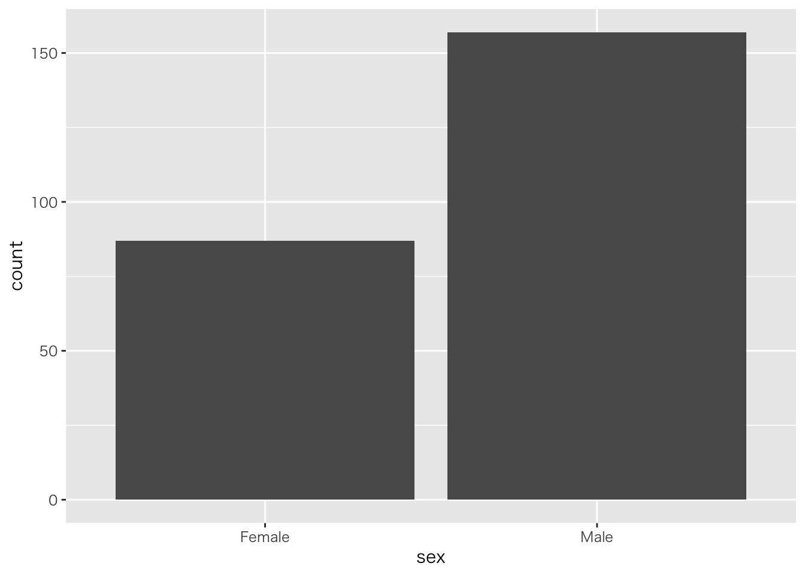

# install.packages("tidyverse") {.unnumbered}第2回 データの構造と扱い

今回の目標
- Rでのデータの持ち方（データフレーム）を理解する。
- 外部データ（CSVファイルなど）を読み込む方法を学ぶ。
- Tidyverse パッケージを使った基本的なデータ操作を学ぶ。
パッケージの準備
Rには便利な機能を追加する パッケージ という仕組みがあります。 この講義では、データ分析に必須のパッケージ群 Tidyverse を使います。
初回のみインストールが必要です（前回の課題で実施済みなら不要）。
使うときは毎回 library() 関数で読み込みます。
library(tidyverse)データフレーム
統計分析では、Excelのような表形式のデータを扱います。Rではこれを データフレーム と呼びます。 Rには練習用のデータセットがいくつか入っています。iris（アヤメのデータ）を見てみましょう。
head(iris) # 最初の6行を表示データの読み込み
自分のデータを分析するには、CSVファイルなどを読み込む必要があります。 read_csv() 関数を使います。
# data.csv というファイルがある場合の例 {.unnumbered}
# df <- read_csv("data.csv") {.unnumbered}今回は、Web上のCSVデータを読み込んでみましょう。
url <- "https://raw.githubusercontent.com/mwaskom/seaborn-data/master/tips.csv"
tips <- read_csv(url)データの概要を確認します。
glimpse(tips)
#> Rows: 244
#> Columns: 7
#> $ total_bill <dbl> 16.99, 10.34, 21.01, 23.68, 24.59, 25.29, 8.77, 26.88, 15.0…
#> $ tip <dbl> 1.01, 1.66, 3.50, 3.31, 3.61, 4.71, 2.00, 3.12, 1.96, 3.23,…
#> $ sex <chr> "Female", "Male", "Male", "Male", "Female", "Male", "Male",…
#> $ smoker <chr> "No", "No", "No", "No", "No", "No", "No", "No", "No", "No",…
#> $ day <chr> "Sun", "Sun", "Sun", "Sun", "Sun", "Sun", "Sun", "Sun", "Su…
#> $ time <chr> "Dinner", "Dinner", "Dinner", "Dinner", "Dinner", "Dinner",…
#> $ size <dbl> 2, 3, 3, 2, 4, 4, 2, 4, 2, 2, 2, 4, 2, 4, 2, 2, 3, 3, 3, 3,…データの操作 (dplyr)
Tidyverseに含まれる dplyr パッケージを使うと、データの加工が直感的に行えます。
1. 列を選ぶ: select()
特定の列だけを取り出します。
tips %>%
select(total_bill, tip) %>%
head()%>% は パイプ演算子 といい、「左の結果を右の関数に渡す」という意味です。 「tipsデータ を selectする」と読みます。
2. 行を選ぶ: filter()
条件に合う行だけを取り出します。 例えば、time が “Dinner” のデータだけ抽出します。
tips %>%
filter(time == "Dinner") %>%
head()3. 新しい列を作る: mutate()
計算結果などを新しい列として追加します。 チップの割合（チップ / 総額）を計算してみましょう。
tips %>%
mutate(tip_rate = tip / total_bill) %>%
select(total_bill, tip, tip_rate) %>%
head()5. データの並び替え: arrange()
データを特定の列の値で並び替えます。
# 支払総額の小さい順に並べる
tips %>%
arrange(total_bill) %>%
head()
# 降順（大きい順）にする場合は desc() を使う
tips %>%
arrange(desc(total_bill)) %>%
head()6. 要約統計量を計算: summarize()
データの要約統計量（平均、合計など）を計算します。
tips %>%
summarize(
平均支払額 = mean(total_bill),
平均チップ = mean(tip),
データ数 = n()
)グループごとに集計する場合は、group_by() と組み合わせます。
# 曜日ごとの平均支払額を計算
tips %>%
group_by(day) %>%
summarize(
平均支払額 = mean(total_bill),
データ数 = n()
)パイプ演算子 %>% の活用
パイプ演算子を使うと、複数の操作を順番につなげられます。 「データを読み込んで、フィルタして、新しい列を作って、並び替える」といった一連の操作を、読みやすく書けます。
# 例: ディナーのデータだけを抽出し、チップ率を計算し、支払額の大きい順に並べる
tips %>%
filter(time == "Dinner") %>%
mutate(tip_rate = tip / total_bill * 100) %>% # パーセントで表示
arrange(desc(total_bill)) %>%
select(total_bill, tip, tip_rate, day) %>%
head(10) # 上位10件のみ表示データ操作のヒント
ヒント1: 列名の指定方法
列を指定する方法は2つあります。
# 方法1: $ を使う
tips$total_bill
# 方法2: dplyrで直接列名を書く（パイプと相性が良い）
tips %>% select(total_bill)ヒント2: 複数の条件を組み合わせる
filter() では、&（かつ）や |（または）を使って複数の条件を組み合わせられます。
# 支払額が20ドル以上、かつディナーのデータ
tips %>%
filter(total_bill >= 20 & time == "Dinner") %>%
head()4. データの可視化（チラ見せ）
ggplot2 を使うと、データの分布を簡単に可視化できます。 例えば、男女 (sex) の人数を棒グラフにしてみましょう。
ggplot(tips, aes(x = sex)) +
theme_gray(base_family = "HiraKakuProN-W3") +
geom_bar()
課題
読み込んだ tips データを使って、以下の操作を行ってください。
dayが “Sun”（日曜日）のデータだけをfilter()で抽出してください。- 抽出したデータから、
total_billとsizeの列だけをselect()で選んで表示してください。